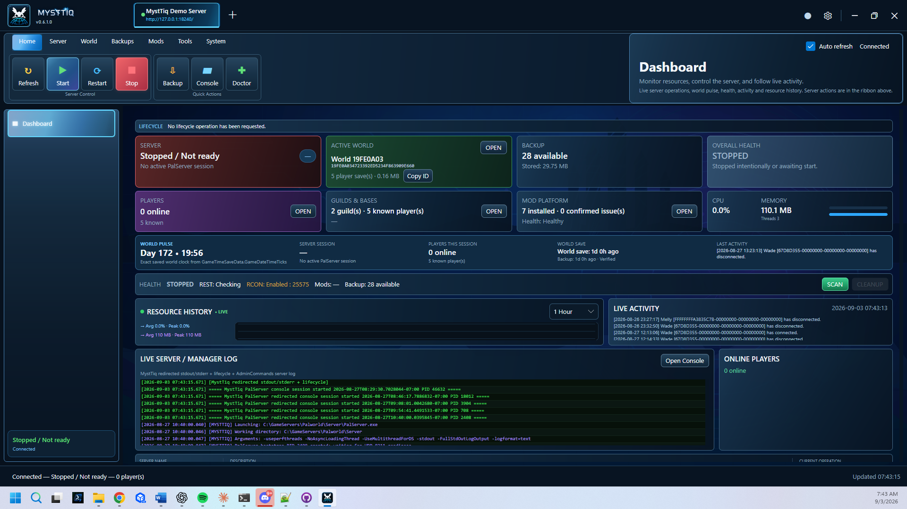

Keep things running
Setup, start, stop, restart and update. Follow health, schedule tasks and investigate crashes.
PALWORLD SERVER ADMINISTRATION
Run your servers, protect your worlds, and keep your mods organized. One desktop for local and remote administration.
Open source · Windows release workflow · Linux source builds
YOUR EVERYDAY TOOLKIT
Setup, start, stop, restart and update. Follow health, schedule tasks and investigate crashes.
Backups, retention and restore checks, with guarded tools for inspecting and repairing world data.
Inventory, health checks, enable/disable and rollback, with UE4SS, Workshop and Nexus integration.
Resources and seven-day history, plus per-server priority, eco mode, processor cores and game-level bandwidth settings.
Player tools, world map, kits, whitelist and temporary bans. Item/Pal and teleport actions depend on supported providers and live verification.
Named accounts, four roles, scoped permissions and audit records. Disabled controls name the role they need. Connect remotely with pinned TLS.

MAKE IT YOURS
Pick a language in the title bar or Settings. Choose Dark, Light, Midnight, High contrast or Follow system, with density settings and themed artwork.
Help improve a translation →The 11 non-English catalogs are draft translations awaiting native review. Text passed on from Windows, Linux or the game can still arrive in English. CJK text needs suitable system fonts on Linux.
GET STARTED
Choose the Windows-x64 ZIP from a published release, extract it fully and run MystTiq.Desktop.exe. Keep its headless folder alongside it. The .NET runtime is included.
FullSource ZIPs are for development. Keep server data and backups separate from application files. Closing the desktop does not stop a managed server.
THE PATH TO V1.0
A firewall rule for each server's own port where you set it, its own port for a second server, and a server search that shows what it scans.
The desktop moves to the current UI framework, checked on every page and in every appearance mode.
Native review, live integration, screen-reader and platform acceptance. No date committed.
MystTiq is under active development. Available tools and test scripts do not mean every live integration has passed acceptance.
Report a reproducible issue, review a translation, or contribute a focused improvement.